|
|
|
Les vues statiques d'UML (suite...)
DIAGRAMME DE CLASSES
q
Diagramme de classes : sémantique
- Un diagramme de classes est une collection d'éléments de modélisation statiques (classes, paquetages...), qui montre la structure d'un modèle.
- Un diagramme de classes fait abstraction des aspects dynamiques et temporels.
- Pour un modèle complexe, plusieurs diagrammes de classes complémentaires doivent être construits.
On peut par exemple se focaliser sur :
- les classes qui participent à un cas d'utilisation (cf. collaboration),
- les classes associées dans la réalisation d'un scénario précis,
- les classes qui composent un paquetage,
- la structure hiérarchique d'un ensemble de classes.
- Pour représenter un contexte précis, un diagramme de classes peut être instancié en diagrammes d'objets.
q Associations entre classes
- Une association exprime une connexion sémantique bidirectionnelle entre deux classes.
- L'association est instanciable dans un diagramme d'objets ou de collaboration, sous forme de liens entre objets issus de classes associées.
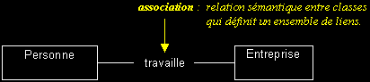
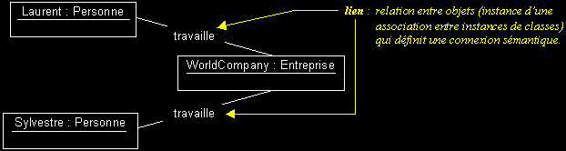
q Documentation d'une association et types d'associations
- Association en forme verbale active : précise le sens de lecture principal d'une association.
Voir aussi : association à navigabilité restreinte.
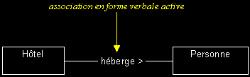
- Rôles : spécifie la fonction d'une classe pour une association donnée (indispensable pour les associations réflexives).
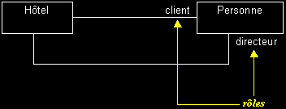
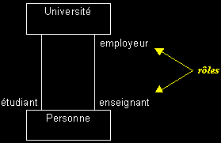
- Cardinalités : précise le nombre d'instances qui participent à une relation.
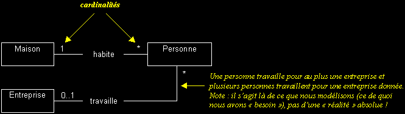
Expression des cardinalités d'une relation en UML :
n : exactement "n" (n, entier naturel > 0)
exemples : "1", "7"n..m : de "n" à "m" (entiers naturels ou variables, m > n)
exemples : "0..1", "3..n", "1..31"* : plusieurs (équivalent à "0..n" et "0..*")
n..* : "n" ou plus (n, entier naturel ou variable)
exemples : "0..*", "5..*"
- Relation de dépendance : relation d'utilisation unidirectionnelle et d'obsolescence (une modification de l'élément dont on dépend, peut nécessiter une mise à jour de l'élément dépendant).
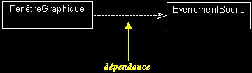
- Association à navigabilité restreinte
Par défaut, une association est navigable dans les deux sens. La réduction de la portée de l'association est souvent réalisée en phase d'implémentation, mais peut aussi être exprimée dans un modèle pour indiquer que les instances d'une classe ne "connaissent" pas les instances d'une autre.
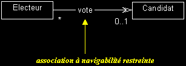
- Association n-aire : il s'agit d'une association qui relie plus de deux classes...
Note : de telles associations sont difficiles à déchiffrer et peuvent induire en erreur. Il vaut mieux limiter leur utilisation, en définissant de nouvelles catégories d'associations.
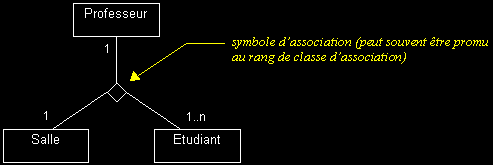
- Classe d'association : il s'agit d'une classe qui réalise la navigation entre les instances d'autres classes.
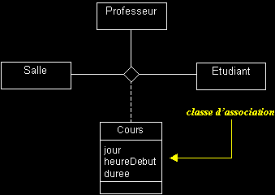
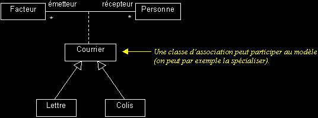
- Qualification : permet de sélectionner un sous-ensemble d'objets, parmi l'ensemble des objets qui participent à une association.
La restriction de l'association est définie par une clé, qui permet de sélectionner les objets ciblés.
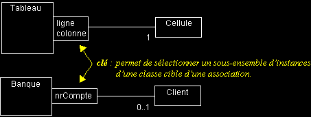
|
|
|